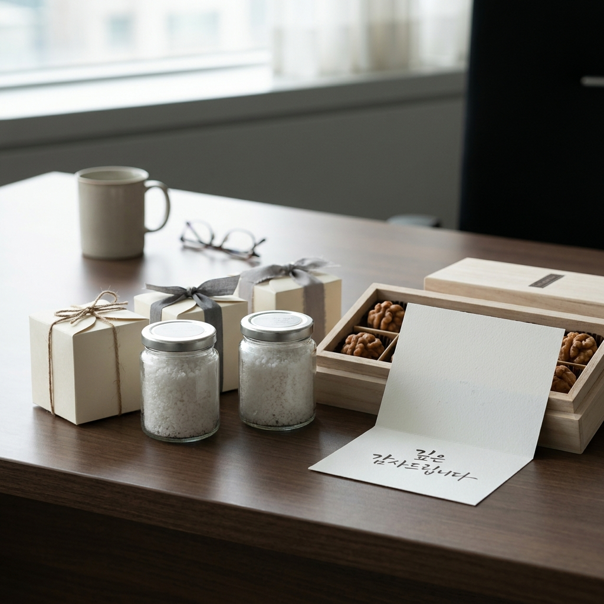

장례 후 조문 답례품 소금 vs 떡 vs 호두과자 비용 비교 — 직장 출근 첫날 감사 인사말 문구 예시와 타이밍
장례를 마친 후 직장에 복귀할 때는 복귀 첫날 오전 중 부서원들에게 구두로 먼저 인사를 드리고, 준비한 조문 답례품을 감사 메시지 카드와 함께 전달하는 것이 가장 바른 예절입니다.
답례품 예산은 개당 3,000원~5,000원 선이 가장 무난하며, 보관이 쉬운 호두과자나 개별 포장 떡, 혹은 액운을 막는 전통 천일염 소금 세트가 대중적인 선택지입니다.
직접 찾아뵙지 못하는 타 부서원이나 원격 조의자에게는 사내 메일이나 모바일 메신저를 통해 정중한 감사 문구를 당일 오후까지 발송해야 결례를 범하지 않습니다.
상황별 답례품 비용 비교표와 복사해 바로 쓰는 직장 복귀 감사 인사말 문구 양식을 아래 본문에서 확인해 보세요.

정갈하게 포장된 조문 답례품과 감사의 마음을 담은 손편지 메시지 카드 / AI 제작 이미지
01 | 부모상·조부모상 장례 후 조문 답례품과 직장 복귀 예절 개요
부모님이나 조부모님, 배우자 등 가족의 상을 치르고 나면 정신적, 육체적으로 극심한 피로가 몰려오지만, 장례 후 가장 중요한 사회적 마무리가 남아 있습니다.
바로 슬픔의 순간에 빈소를 직접 찾아주거나 따뜻한 조의금과 화환으로 위로해 준 직장 동료, 상사, 지인들에게 감사의 마음을 표하는 '조문 답례 예절'입니다.
특히 직장 생활을 하는 분들에게 경조휴가 후 첫 출근 날은 동료들의 배려 덕분에 상을 무사히 마쳤음을 알리고 일상으로 복귀하는 중요한 분기점입니다.
내가 자리를 비운 동안 나의 업무 공백을 메워주고 대신 처리해 준 부서원들에게 말 한마디와 작은 정성을 전하는 것은 직장 내 신뢰 관계를 지키는 핵심 매너입니다.
과거에는 떡을 돌리는 것이 일반적이었으나 최근에는 위생과 보관 편의성, 실용성을 고려하여 소금, 견과류, 티백 세트 등 품목이 매우 다양해졌습니다.
02 | 조문 답례품 품목별(소금 vs 떡 vs 호두과자 vs 커피쿠폰) 비용 비교표
직장 복귀 시 부서 규모와 예산에 맞게 선택할 수 있도록 대표적인 조문 답례품 4종의 비용과 장단점을 비교 분석했습니다.
| 답례 품목 |
1인당 평균 예산 |
주요 장점 |
단점 및 주의사항 |
추천 대상 |
| 조문용 천일염 (소금) |
3,500원 ~ 5,500원 |
액운을 물리친다는 전통 의미, 유통기한 무제한, 실용성 |
젊은 층 선호도 호불호 있을 수 있음 |
어르신, 중장년층 직장인, 전통 예절 중시 부서 |
| 답례 떡 (백설기/경단) |
3,000원 ~ 4,500원 |
가장 친숙하고 대중적인 조문 답례, 당일 간식 해결 |
당일 섭취 필수, 굳거나 상하기 쉬움 |
출근 당일 전 부서원이 한자리에 모이는 팀 |
| 호두과자 / 구움과자 |
3,500원 ~ 5,000원 |
남녀노소 호불호 없음, 실온 3~4일 보관 용이 |
너무 가벼운 느낌이 들지 않도록 정갈한 포장 필수 |
2030 직장인 비율이 높은 부서, IT/스타트업 |
| 모바일 커피쿠폰 / 티백 |
4,500원 ~ 6,000원 |
비대면 전송 용이, 쓰레기 발생 없음, 호불호 최저 |
성의가 다소 가볍게 느껴질 수 있어 정중한 문구 필수 |
타 지사·재택근무 부서원, 원격 조의자 |
보통 같은 층에 근무하는 본인 팀과 직속 부서에는 실물 답례품(호두과자나 떡, 소금)을 돌리고, 외근이나 타 지사에 있는 분들에게는 모바일 쿠폰으로 답례하는 복합 형태가 가장 효율적입니다.
03 | 전통 조문 답례 소금의 상징적 의미와 최근 실용 선물 트렌드
최근 조문 답례품으로 프리미엄 천일염 소금 세트(히말라야 핑크솔트, 신안 천일염 등)가 큰 인기를 얻고 있습니다.
우리 전통 민속에서 소금은 부정한 기운과 액운을 쫓아내고 주변을 정화하는 벽사(辟邪)의 상징으로 여겨져 왔습니다.
상가(喪家)에 다녀온 뒤 문밖에서 소금을 뿌리던 관습처럼, 슬픔을 함께 나눠준 조문객에게 감사의 마음과 함께 나쁜 액운을 털어내고 가정에 평안이 깃들기를 바라는 축원의 의미가 담겨 있습니다.
또한 소금은 상하지 않고 모든 가정의 요리에 필수적으로 쓰이기 때문에 "받아서 버릴 일 없이 유용하게 썼다"는 호평을 받는 대표적인 실용 아이템입니다.
소금을 준비할 때는 '감사합니다' 문구가 단정하게 적힌 종이 상자에 포장된 제품을 고르시는 것이 격식에 맞습니다.
경조휴가를 마치고 출근 첫날 팀원들과 상사에게 정중하게 고개 숙여 감사 인사를 드리는 모습 / AI 제작 이미지
04 | 직장 출근 첫날 부서원 대면 감사 인사 순서와 부의금 챙기기 팁
출근 첫날 아침 행동 요령은 순서가 매우 중요합니다.
🚶 출근 첫날 대면 인사 권장 순서
1. 출근 직후 팀장 및 직속 상사 면담: 출근 시간보다 10~15분 일찍 도착하여 상사에게 먼저 찾아가 "팀장님의 배려 덕분에 장례를 무사히 잘 모시고 복귀했습니다"라고 구두로 인사드립니다.
2. 부서원 순회 대면 인사: 업무 시작 전 부서원 한 분 한 분의 자리를 돌며 "제 빈자리 업무 챙겨주셔서 진심으로 감사드립니다"라고 인사합니다.
3. 답례품 배포: 점심 식사 전후 또는 티타임 시간에 맞춰 준비한 답례품을 감사 카드와 함께 각자의 책상 위에 전달합니다.
4. 타 부서 및 협조 부서 방문: 화환을 보내주었거나 직접 빈소를 찾아준 타 부서 팀장 및 동료에게 점심 전후 잠시 들러 짧게 감사 인사를 전합니다.
직접 얼굴을 마주보고 인사할 때는 말을 길게 늘어놓기보다는 간결하고 진정성 있는 태도로 고개를 숙이는 것이 단정합니다.
05 | 회사 사내 게시판 및 이메일 조문 감사 인사말 문구 템플릿 예시
전체 임직원이나 다른 층, 지방 지사 등 직접 찾아뵙기 어려운 분들을 위해 사내 인트라넷 게시판이나 전체 메일로 발송하는 공식 감사문 표준 양식입니다.
✉️ 사내 인트라넷 및 단체 메일 감사문 템플릿
[제목: 감사 말씀 올립니다 — OOO 부서 OOO 배상]
임직원 여러분 안녕하십니까. OOO팀 OOO입니다.
지난 O월 O일, 저의 [부친상/모친상/빙부상]에 바쁘신 공무와 원거리에도 불구하고 따뜻한 위로와 격려의 발걸음을 해주시고, 후의를 베풀어 주신 데 대해 머리 숙여 깊은 감사의 말씀을 올립니다.
보내주신 따뜻한 조의와 위로 덕분에 황망했던 슬픔 속에서도 [아버님/어머님]을 편안히 좋은 곳으로 잘 모실 수 있었습니다.
베풀어 주신 은혜에 일일이 찾아뵙고 감사의 인사를 드리는 것이 도리이나, 황망한 중이라 우선 글을 통해 먼저 인사를 드리게 된 점 너른 마음으로 혜량하여 주시기 바랍니다.
앞으로 귀댁에 애경사가 있으실 때에는 잊지 마시고 꼭 연락을 주시어 저에게도 보은할 수 있는 기회를 주시기 바랍니다.
항상 건강하시고 댁내에 늘 평안과 행복이 가득하시기를 진심으로 기원합니다.
2026년 O월 O일
OO부서 OOO 배상
이메일 문구는 격식 있는 어휘를 사용하고, 마지막에 은혜를 갚겠다는 보은의 의지를 담는 것이 한국 직장 문화의 미덕입니다.
06 | 카카오톡 및 모바일 조문객·원격 부의자 감사 문자 문구 예시
친한 직장 동료, 친구, 비대면으로 부의금 계좌 송금만 보내준 지인들에게는 모바일 메신저를 통해 보다 자연스럽고 온기 있는 문구를 보내시면 됩니다.
📱 상황별 카카오톡 감사 문자 문구 2선
• 유형 1: 직장 동료 및 가까운 선후배
"OO님, 이번에 저희 [부친상]에 따뜻한 위로와 조의를 보내주셔서 정말 큰 힘이 되었습니다. 제가 자리를 비운 동안 업무 챙겨주시느라 고생 많으셨습니다. 덕분에 장례 잘 마치고 복귀했습니다. 곧 따뜻한 커피 한잔 모시겠습니다. 진심으로 감사드립니다."
• 유형 2: 비대면 조의금 송금 지인
"OO님, 멀리서도 잊지 않고 마음을 담아 위로의 뜻을 보내주셔서 슬픔 속에서도 큰 위안을 얻었습니다. 직접 뵙지 못해 아쉽지만 베풀어주신 온정 잊지 않고 마음 깊이 간직하겠습니다. 늘 건강하시고 좋은 일만 가득하시길 바랍니다."
단체 복사 붙여넣기 느낌을 지우기 위해 받는 사람의 이름(호칭)을 반드시 맨 앞에 붙여 발송하는 것이 정성스럽습니다.
07 | 조문 답례품 전달 골든타임과 타이밍별 주의사항
조문 감사 인사와 답례품 전달에는 분명한 골든타임이 존재합니다.
가장 완벽한 타이밍은 장례 종료 후 직장 복귀 첫날 당일(D+1)입니다.
아무리 늦어도 복귀 후 3일 이내, 혹은 장례 종료 후 1주일 이내에는 모든 답례와 감사 연락이 완료되어야 합니다.
시간이 2주 이상 지나버리면 감사의 진정성이 퇴색되고 오히려 예절을 모르는 사람으로 비칠 수 있습니다.
만약 답례품 배송 일정이 늦어진다면 메일이나 전화로 감사 인사를 먼저 드린 후 "작은 마음을 따로 준비하였으니 도착하는 대로 전달해 드리겠다"고 양해를 구하는 것이 좋습니다.
08 | 상사·임원 및 타 부서 협조자 대상 별도 답례 기준과 예산 범위
빈소에 화환을 보내준 임원진이나, 상조 용품 지원 및 특별 경조금을 챙겨준 인사팀, 내 업무를 도맡아 처리해 준 사수(사원)에게는 차등화된 답례를 고민하게 됩니다.
팀원 전체에게 4천 원대 호두과자를 돌리더라도, 내 업무를 집중 대행해 준 직속 동료에게는 따로 점심 식사를 대접하거나 1~2만 원 상당의 기프티콘을 전하는 것이 통상적인 관례입니다.
임원이나 부서장에게는 단체 답례품과 별도로 감사 편지를 정갈하게 동봉하여 정중함을 더하는 것으로 충분하며, 과도하게 값비싼 개별 선물을 하는 것은 오히려 부담을 줄 수 있으므로 지양합니다.
09 | 장례 후 직장 복귀 전 체크리스트와 서류(경조휴가 증빙) 제출 순서
마지막으로 직장 복귀 전후로 행정적으로 챙겨야 할 필수 서류와 복귀 준비 사항입니다.
📌 장례 복귀 행정 서류 체크리스트
1. 사망진단서 또는 시체검안서 사본: 장례식장 또는 병원에서 발급받은 원본/사본 (회사 경조휴가 및 경조금 신청 필수 증빙)
2. 가족관계증명서: 고인과 본인의 가족 관계를 입증하기 위한 서류 (정부24 인터넷 무료 발급)
3. 사내 경조금 및 경조휴가 신청서 작성: 복귀 3일 이내 사내 ERP 시스템을 통해 신청서 작성 및 증빙 서류 첨부
4. 부의록 명단 정리: 빈소에 다녀간 직장 동료 명단과 조의금 액수를 엑셀로 정리하여 추후 경조사 발생 시 상호 품앗이 데이터로 영구 보관
5. 단정한 복장 준비: 복귀 첫 주 동안은 화려하거나 밝은 옷보다는 단정한 어두운색(블랙, 네이비, 차콜 그레이) 정장 착용
슬픔을 딛고 건강하게 일상으로 복귀하는 모습을 보여드리는 것이야말로 나를 걱정해 준 동료들에게 보답하는 가장 큰 답례입니다.
#조문답례품
#장례답례품
#조문감사인사말
#장례후첫출근
#조문답례품소금
#조문답례떡
#호두과자답례품
#부고답례문자
#직장경조휴가
#경조사예절